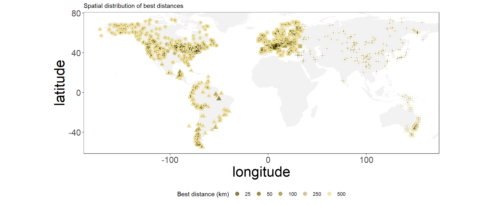

The objective of this report is to give an detailed description of individual steps of the data analysis
The compilation of a pollen dataset for our analysis is performed a priori. Raw pollen datasets are carefully selected with the R-Fossilpol package, and the guidelines to the workflow are well described in Flantua et al. 2023 and in our website Fossilpol project. Most datasets are obtained from the Neotoma Paleoecology Database. Some additional data are from private owners in areas with data gaps, which we have limited access to use. We do not have the intellectual property rights to make these data public available. Therefore, only the derivatives of the analysis can be publicly shared. Table 1 provides a summary of the settings used in the FOSSILPOL workflow to obtain a standardised project dataset. This input data are further filter during the data processing steps in HOPE to get the final collection of a standardized dataset of high data quality we can use further in our data analyses.
An important step in FOSSILPOL to obtain a standardised pollen data set within and across regions is the harmonisation of pollen types. Different analysts have different backgrounds and schools using different nomenclature, and the level of pollen taxonomic identifications and names can vary widely. To be able to make numerical comparisons of different pollen records, the level of pollen taxonomy should be similar. Consequently, pollen harmonisation tables have been produced for different regions to try to minimise biases related to this. The regional harmonisation tables created in our project are for Europe, Levant, Siberia, Southern Asia, Northern America, Latin America, and the Indo-Pacific region (Birks et al. harmonisation paper). These tables are used as input in the Fossilpol workflow above (see Fossilpol step_by_step guide).
We have applied a number of filtering criteria to obtain as high a data quality as possible so that we can compare the numerical estimates on standardised data sets. These filtering criteria are: remove potentially duplicated pollen records, sorting levels (samples) by age, remove levels (samples) lower than a threshold of total number pollen grains counted (= pollen sum), remove pollen records based on age (minimum and maximum age ranges), remove levels (samples) depending on the age of the last control point, remove samples beyond the age ranges of interest, and remove pollen records if the total number of samples (N) is too low.
This filtering is done on the chronologies, raw pollen counts, harmonised pollen counts, and the age uncertainties from the age-depth models (Bchron). The preferable number of minimum pollen grains is set to 150, but this led to a great loss of datasets in regions with less data coverage, and we therefore reduced this number to 25 with the condition that less than 50 % of the samples must have a low pollen sum. This allow us to keep more datasets, but in the cases pollen records have a low minimum pollen sum, we acknowledge that the estimates of pollen assemblage properties (PAPs) are less robust. The maximum age beyond extrapolation is set to 3000 years because ages extrapolated beyond this threshold is considered highly uncertain. Finally, pollen records with less than 5 samples are removed for further analyses.


Let’s select a one record and use it as an example.

To determine the impact of past humans on fundamental ecosystem properties, we need to develop indicators of past human presence and activity. This led to the development of a new method, where we use human event detection and indicators identified from pollen records based on expert knowledge, combined with the method for quantifying human presence based on radiocarbon dates derived from archaeological artifacts and Summed Probability Densities (SPD) (Bird et al. 2022). We believe that this solves the issue that we can use a standardised variable as indicator of past human impact, and partially avoids the difficulty of creating standardised variables to detect human disturbance events across different regions and continents. This may reduce the potential circularity of human detection events derived from the same pollen records as the estimates of ecosystem properties.
For each pollen record, we have detected periods of human presence from the pollen data. Two methods have been used:
First, a pollen diagram of each pollen record has been examined by a regional expert and the age of each event type has been recorded.
#>
#> ------------------------------------------------
#> Region Event.type
#> --------------- --------------------------------
#> North America BI = Before Impact; FC = First
#> Cultivation; ES = European
#> Settlement
#>
#> Europe BI = Before Impact; FI = First
#> Indication; FCu = First
#> Cultivation; EC = Extensive
#> Clearance; CC = Complete
#> Clearance
#>
#> Asia BI = Before Impact; FI = First
#> Indication; FCu = First
#> Cultivation; EI = Extensive
#> Impact
#>
#> Indopasific no_impact = No Impact; weak =
#> Weak Impact; medium = Medium
#> Impact; strong = Strong Impact
#> ------------------------------------------------
#>
#> Table: Table 2: Type of human events identified in pollen diagramsNote that the event types are uniquely defined within continents, and event types with the same name have different meanings between continents.
Second, an algorithm is made to obtain the binary variables (0/1) associated with each event type that is identified in each pollen record. A new vector with the average ages in between levels (samples) of the identified event type was created because the time of the events is assumed to have occurred prior to the changed event. A new matrix was created that uses the new age vector with the events type. The different event types are assigned binary values (0/ 1) depending on if the event type is present (i.e. when the age of the specific event is detected). Ultimately, logical principles were followed and the binary values were adjusted to get the event data for each pollen record. If no human event is recognised, it does not necessarily mean that humans were absent, but instead that there was not enough information to identify human activity in the pollen records.
Below is a figure that intends to represent the data associated with human events in example record. The different colours represent the differnet types of human events in each region. The smooth trend lines represent simple binomial GAM models that show the main trends and alteration in the timing of events over time.

The quantification of summed probability distribution (SPD). requires a distance to be selected around each site location to collect the relevant dates of archaeological artefacts around it. This will limit the area of human presence and indirectly the amount of human activity relevant to pollen records from each site.
We used the global dataset of radicarbon dates (RC dates) of archeological artefacts from Bird et al. 2022.
We have gathered all radiocarbon dates up to 500 km away and split them into groups (categories) by the distance to the sequence.
Only RC dates with valid geographical location (longitude and latitude), and ‘LocAccuracy’ > 0 were selected. For each pollen record, RC dates were classified by the geographical distance to the pollen record. The chosen distance classes were: 5, 25, 50, 100, 250, 500 km. For each distance category, we used all RC dates up to the maximum distance of selected category. For example, 250 contains all RC dates up to 250 km including 5, 25,…
However, distance class with less than (250 RC dates) (a Threshold) is filtered out in order to maintain robust SPD estimation.

For each distance category, SPD is estimated using spd function from rcarbon package for each distance class for each year between a minimum threshold age and 12 ka.
Radiocarbon dates were calibrated using calibrate function from rcarbon package with appropriate calibration curves (“IntCal20”, “ShCal20”, “mixed”). Calibration curves were obtained rcarbon package and “mixed” was created using rcarbon::mixCurves function with ‘p’ = 0.5. Calibration curves were assigned by their geographical location following Hua et al., 2013.
For the selected seqeunces intcal20 have been used.
The temporal distribution of SPDs constructed by diferent distances:

The minimum threshold ages are different for different regions and are decided based on the availability of radiocarbon dating for different regions. In general there is a bias that radiocarbon dating is rather limited on younger material where in many regions there are a lack of C14 data during the last 2000 years. Table 5 show the ages where data younger than age_from where removed.
#>
#> --------------------------
#> region age_from
#> --------------- ----------
#> Europe 2000
#>
#> Latin America 2000
#>
#> Asia 2000
#>
#> North America 500
#>
#> Oceania 500
#> --------------------------In order to select the best distance, we want to know, which SPD curve is the best at explaining the changes in pollen events.
Therefore, for each distance, we calculated Redundancy Analysis (RDA) with individual event values as response and SPD as predictors.
Here is a visualisation of the data to fit:

Or in a form of table:
#>
#> ----------------------------------------------------------------------------
#> age no impact first impact extensive clearince complete clearince
#> ------ ----------- -------------- --------------------- --------------------
#> 3790 0 1 0 0
#>
#> 6767 1 0 0 0
#>
#> 7015 1 0 0 0
#>
#> 7262 1 0 0 0
#>
#> 7869 1 0 0 0
#>
#> 8236 1 0 0 0
#> ----------------------------------------------------------------------------
#>
#> Table: Table continues below
#>
#>
#> ----------------------------------------------------------
#> first cultivation 50 100 250 500
#> ------------------- --------- --------- --------- --------
#> 0 0.02323 0.06117 0.2413 0.9766
#>
#> 0 0.01443 0.0655 0.3516 1.124
#>
#> 0 0.01545 0.05377 0.2674 0.9394
#>
#> 0 0.01738 0.04415 0.2374 0.673
#>
#> 0 0.01178 0.02182 0.1267 0.2665
#>
#> 0 0.00652 0.01761 0.08569 0.2014
#> ----------------------------------------------------------We can plot the individual ordianation but it is not very informative. The size and ocupancy of points corespond with their age.

We can evaluate the amount of variability explained by each ordination. We then extracted adj.r2 for each SPD distnce:

Therefore we have selected 500 as the best distance and the prefered SPD curve for 4197 sequence
Here is a overview of the status of records base on the presence of humna impact from pollen diagrams and RC data

Now we can apply the selection of best distance to all sequences which fullfil such criteria: 1. Have events 2. Have at least one SPD constructed
We can summary the best distance per each continent


To prepare the response variables of our main pollen dataset compilation and to be able to analyse fundamental ecosystem properties, we prepared the standard estimates of pollen assemblage properties (PAP) (Bhatta et al. 2023). The PAP estimations provide different aspects of pollen assemblage diversity which includes palynological richness, diversity and evenness, compositional change and turnover, and Rate-of-Change (RoC).
These response variables are calculated using the newly developed R-Ecopol package that contain all the functions needed to estimate PAPs for our pollen data assembly. The base functions used in this package are derived from other dependency packages such as mvpart package (Therneau et al. 2014) to estimate pollen zonations with multivariate regression trees, vegan (Oksanen et al. 2022) for other mutivariate techniques and dissimilarity indices functions from iNext (Chao et al. 2014) that have been modified to extract interpolated Hill numbers based on a minimum sample size, and newly developed R functions to run DCCA using Canoco 4.5 (ter Braak xxxx) to list a few, among other, dependency packages. Additionally, R-Ratepol (Mottl 2021) is used get the estimates of RoC
The different aspects of palynological diversity are estimated using Hill’s effective species numbers N0, N1, N2, and the associated evenness ratios of N2/N1 and N1/N0. These are combined through one equation where the effective species numbers differ mainly in how the rare taxa are weighted in the parameter q:
\[^q{D} = (\sum_{i=1}^{S} p_{i}^{q})^{1/(1-q)}\]
When q is 0, rare and abundant taxa have equal weight and the number is simply the number of taxa in the sample. The equation is not possible to define for q = 1, but as it approaches 1, it is equal to the exponential of the well-known Shannon index and reports the number of equally common taxa. When q = 2, it is the same as the inverse Simpson diversity index and provides the number of equally abundant taxa with a low weight on rare taxa. The advantage of using effective species numbers is that they provide easily interpretable units and contain the doubling effect. To standardize the sample sizes, we use the rarefaction approach developed by Chao et al. These estimates are rarefied to the number of n = 150 grains, or in some cases to a lower sum (minimum n = 25). Some pollen records were only available as pollen percentages, and as the sample size is unknown, these are then rarefied to the minimum sum of percentages. The evenness ratios will be 1 if all taxa are equally abundant, and the ratios hence indicate changes in abundances between the numbers of rare, equally common, and abundant taxa.
We acknowledge that even though attempts are made to standardise richness and diversity estimates based on standard sample size, there are additional biases that are not taken into consideration such as differences in total pollen production and pollen representation (Odgaard 1998, 2001). In some cases, the total pollen sum is also too low to be considered a robust estimate, but it was a choice made on balancing loosing too much information from geographical areas with less data coverage (see data filtering above).

Compositional change is calculated using multivariate regression trees (MRT) with age as the constraining variable. MRT is in general a robust tool to explore and predict changes in multivariate data sets using environmental predictor variables (De’ath, Simpson and Birks 2012). This technique has been adopted in palaeoecology to detect major zones in pollen diagrams or shifts between periods of homogeneous vegetation in time (Simpson and Birks 2012). We use the pollen taxa in percentages without any data transformations as the response and the median ages derived from the age-depth model as the constraining variable. The recursive partitioning are based on chi-square distances between pollen samples constrained by time. The number of cross-validation is set to 1000, and the optimal sized tree is chosen based on the 1SD rule (Simpson and Birks 2012).

Compositional turnover is estimated using detrended canonical correspondence analysis (DCCA) with age as the explanatory variable (ter Braak and Smilauer 2007?). Changes in Weighted average (WA) sample scores (CaseR scores sensu ter Braak and Smilauer 2012) are measures of compositional turnover in standard deviation (SD) units (Birks 2007). The WA scores are regressed with time using a second-order polynomial (age+age^2) to allow more flexibility in the turnover pattern within a pollen record. Total compositional turnover is a measure of the total length of CaseR scores along the DCCA axis 1, whereas the pattern within a record is the measures between the individual samples along the DCCA axis 1. The response data are pollen percentages without any transformation to maintain the chi-square distances between samples, whereas the ages are the median ages derived from the age-depth model for each site.

Rate-of-change for the pollen assemblages in the pollen records are quantified using the novel R-Ratepol package (Mottl et al. 2021). RoC is estimated using moving windows of 500 years’ time bins of five number of windows shifts where samples are randomly selected for each bin. This approach is shown to increase the correct detection of RoC peak-points than the more traditional approaches (Mottle et al. 2021). RoC are reported as dissimilarity per 500 years using the Chord dissimilarity coefficient. Sample size is standardized in each working unit to 150 grains or the lowest number detected in each dataset. We use only the RoC scores further in the analyses.

Change-points detection of all the PAP variables are calculated using conventional regression trees (RT) for single variables with Euclidean distances. The transitions between the resulting groups (or zones) per variable is detected and saved as binary (0/1) variables. A change-point is defined as 1, where the mean ages between the two consecutive samples are used as the timing of this significant change. This is done individually for each PAP variable.
The significant change points of the richness, diversity, and evenness variables are combined into one variable, and the significant change points of compositional turnover, compositional change, and rate-of-change is combined in a second variable. The density of these two variables are calculated using a Gaussian kernel,and re-scaled to each of specific age ranges for each individual pollen record (i.e. minimum and maximum ages). To solve the boundary issue in density estimation the data is reflected to 0. We extract the interpolated values at every 500 years time step.

All response variables have been estimated using the harmonised pollen records for each location. To obtain estimates of equal spacing of 500 years, we used linear interpolation. In the context of the temporal analysis we analyse samples distributed in space across time, and equal time steps are necessary.
In order to choose a method of interpolation to obtain data on equal time steps, we compared generalise additive models (GAM), hierarchical generalised additive models (HGAM), and simple linear interpolation. By applying linear interpolation, we found that the correlation structure between the multivariate response variables are more similar to the original estimates without equal spacing than applying a GAM or HGAM. The GAM or HGAM models sometime showed unexpected patterns in single PAP estimate that changed these correlations. Since we cannot individually assess all single models for each of the variable in all of the records (>1000), we choose the simplest linear interpolation method. Similar issues were detected when estimating the density variables of changes points. The first approach was to estimate densities of the individual change points, and then use hierarchical generalised additive models (HGAM) to find the common pattern between the two groups representing significant changes in richness, diversity, and evenness, or change in pollen assemblages (MRT, RoC, DCCA1). As some of the models did not converge and showed inconsistent patterns we use the density estimates on the combined variables directly and extracted the interpolated values at every 500 years step.

Paleoclimate from the CHELSA-TraCE21k downscaling algorithm is downloaded from the CHELSA database (Karger et al. 2021, Karger et al. 2021). The selected bioclimatic variables are annual mean temperatures ℃ (bio1, temp_annual), minimum temperatures of coldest month ℃ (bio6, temp_cold), precipitation of warmest quarter kg m-2 quarter-1 (bio18, prec_summer) and precipitation of coldest quarter kg m-2 quarter-1 (bio19, prec_win), where we extracted climate values for the coordinates for each dataset_id retrieving the full time series of every 100 years. In addition, we downloaded the monthly climatology for daily maximum near-surface temperature K/10 (tasmin).

To test if the ecological processes have changed due to past human activity in single records, we use reduced rank multivariate regression. This is also known as distance-based redundancy analysis (db-RDA). We used the R package rdacca.hp to run hierarchial variation partitioning with several predictors. This estimates the variation per variables in different combinations to get the average variable importance independent of the order of predictors. db-RDA was performed using Gower-distances adding a constant because our response data, the PAPS, is a mixture of different units.
Depending on the type of spatial or temporal analysis for hypothesis 1, the explanatory variables are either past human impact (SPDs), palaeoclimatic variables, and/or time (see below).
SPD is the variable of main interest as it represent past human presence. The palaeoclimate is a matrix of summer precipitation, winter precipitation, annual temperatures, and winter temperatures. These are selected as we considered them most relevant to represent major differences in climatic conditions in all the regions (in respect to differences in warm, cold, dry, wet, or regions with high seasonality). Time is represented by the ages of each pollen record, however, this is more difficult to interpret. We assume age may represent time dependent changes such as natural successions and/or ecological changes due to interaction between taxa.

In the hierarchichal variation partitioning analysis, the predictor variables can be applied either as individual predictors or as groups of predictors. In our case, we run the analysis with groups of predictors. This means that the palaeoclimatic variables are included as one matrix and not assessed as individual predictors. (The overall results is not very different from using individual predictors).
The analysis is run in two different ways:
We create a single model per each recrods. We then use the adjusted r2 to assess the goodness-of-fit of models. Adjusted r2 is the modified version of r2 that corrects for the number of samples and predictors in the model. It is calculated using the Ezekiel formula adjr2 = 1 - (1- r2)*(n-1)/ (n-m-1), where n = number of samples in the dataset, and m is the number of variables. In vegan, these are so called semipartial r2 (Legendre et al. 2011). Negative adjusted r2 were replaced by 0 in our analysis. The assessment of a satisfactory model fit is contingent upon the underlying data characteristics. Thus, we considered the range of adjusted r2 and removed models with a total fit falling below the 5% lower quantile threshold, specifically those with a total adj r2 below 0.121.
Then we extracted the total variation of that whole model as well as varience explained by individual predictors. There are three types of variation partition per each predictor:
We then use the total model variation to calculate the percentage of shared and unique variation explained by each predictor.
#>
#> ------------------------------------------------------------------
#> total_variance predictor predictor_unique predictor_shared
#> ---------------- ----------- ------------------ ------------------
#> 0.283 human 0.0717 0
#>
#> 0.283 climate 0.0083 0.1008
#>
#> 0.283 time 0.0321 0.0897
#> ------------------------------------------------------------------
#>
#> Table: Table: Result table of a single record for spatial hierarchichal variation partitioning (continued below)
#>
#>
#> -----------------------------------------------------------------------
#> predictor_total predictor_unique_percent predictor_shared_percent
#> ----------------- -------------------------- --------------------------
#> 0.0521 25.34 0
#>
#> 0.1091 2.933 35.62
#>
#> 0.1218 11.34 31.7
#> -----------------------------------------------------------------------
#>
#> Table: Table continues below
#>
#>
#> -------------------------
#> predictor_total_percent
#> -------------------------
#> 18.41
#>
#> 38.55
#>
#> 43.04
#> -------------------------
However, for certain records, the shared variance of predictors is much larger than the total variance of the model. This caused percentages to be very high.
#>
#> ------------------------------------------------------------------
#> total_variance predictor predictor_unique predictor_shared
#> ---------------- ----------- ------------------ ------------------
#> 0.035 human 0 0.0523
#>
#> 0.035 climate 0 0.0943
#>
#> 0.035 time 0.0162 0.1104
#> ------------------------------------------------------------------
#>
#> Table: Table: Result table of a single record for spatial hierarchichal variation partitioning (continued below)
#>
#>
#> -----------------------------------------------------------------------
#> predictor_total predictor_unique_percent predictor_shared_percent
#> ----------------- -------------------------- --------------------------
#> 0 0 149.4
#>
#> 0 0 269.4
#>
#> 0.1266 46.29 315.4
#> -----------------------------------------------------------------------
#>
#> Table: Table continues below
#>
#>
#> -------------------------
#> predictor_total_percent
#> -------------------------
#> 0
#>
#> 0
#>
#> 361.7
#> -------------------------In these cases, the outliers above 100% were removed.
We then summarised the results per each climate zone within continent.
Here is an example of the distribution of uniqu varience explained by humans for Europe (part of Figure 3).

We then estimate the the median value of variance explained by each predictor (unique and shared).

In this latter analysis, we restructure the data so that each analysis is run per time bin for each continent. First we did it for each ecozone on a continent, but the results is relatively similar so we use the continental scale. The predictor groups in each time bin are the past human presence and the matrix of palaeoclimatic variables. It was necessary to filter out time bins which have less than 5 samples, and for some bins, if all the spds equal zero, the analysis will fail. In this cases there is an insufficient numbers of predictors and the analysis will return NA for these specific time bins.